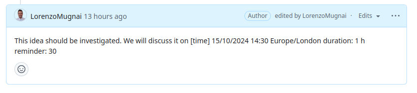

Calendar Integration#
Integrating TaskTide with Google Calendar can be a powerful way to track deadlines and manage tasks seamlessly. However, this integration involves several configuration steps that require careful attention and some time to complete. From setting up your Google Cloud project and enabling APIs to generating credentials and configuring GitHub secrets, each step is essential for a successful integration.
Be prepared to spend some time following the detailed instructions provided in this guide to ensure that your setup is secure and functional. Once completed, the calendar synchronization feature will automate event creation from GitHub issues and comments, streamlining your project management process.
How to Generate credentials.json for Calendar Synchronization#
This guide will walk you through the process of creating a credentials.json file, which is required for the TaskTide calendar synchronization scripts. Follow the steps below to set up the Google Calendar API and download your credentials.
Step 1: Set Up a Google Cloud Project#
Go to the Google Cloud Console.
Sign in with your Google account if prompted.
At the top of the page, click on the Select a project dropdown and choose New Project.
Enter a Project Name (e.g., “TaskTide Calendar Integration”) and click Create.
Wait for the project to be created, then ensure it is selected by clicking on the project name in the dropdown menu.
Step 2: Enable the Google Calendar API#
In the Google Cloud Console, use the search bar to find Google Calendar API.
Click on Google Calendar API in the search results.
Click the Enable button to activate the API for your project.
Step 3: Configure OAuth Consent Screen#
In the left sidebar, go to APIs & Services > OAuth consent screen.
Choose External and click Create.
Fill in the App name (e.g., “TaskTide Integration”), your User support email, and any necessary fields.
In the Developer contact information section, add your email address and click Save and Continue.
Under Scopes, click Add or remove scopes. Search for and add the following scope: -
https://www.googleapis.com/auth/calendarClick Update and then Save and Continue until you reach the summary page.
Click Back to Dashboard.
Step 4: Create OAuth 2.0 Credentials#
In the left sidebar, go to APIs & Services > Credentials.
Click Create Credentials and select OAuth 2.0 Client IDs.
Choose Application type as Desktop app and enter a name (e.g., “TaskTide Calendar App”).
Click Create. A dialog will appear with your Client ID and Client Secret.
Click Download JSON to download the credentials.json file.
Save this file in a secure location, as you will need it for running the TaskTide calendar scripts.
Step 5: Secure Your credentials.json#
Make sure the credentials.json file is stored securely. Do not share it publicly or commit it to version control systems like Git.
Note
The credentials.json file will be used by the script to authenticate and access your Google Calendar. Keep it in the directory specified by the script or pass its path as input when running the script.
You’re now ready to use your credentials.json file with TaskTide’s calendar synchronization feature!
Generating token.json and Setting Up as a GitHub Secret#
Once you have your credentials.json file set up (see How to Generate credentials.json for Calendar Synchronization), follow these steps to run the Python script that generates the token.json file and securely store it as a GitHub secret for use in TaskTide’s workflows.
Step 1: Run the Python Script to Generate token.json#
Ensure the credentials.json file is in the appropriate directory or provide its path as input.
Open a terminal or command prompt.
Navigate to the directory where the scripts/update_credentials.py script is located.
Run the following command to generate the token.json file:
python scripts/update_credentials.pyThis script will check for existing credentials and, if needed, launch an authentication flow in your web browser.
Follow the on-screen prompts to authorize the app with your Google account.
Note
Google will warn you that the app is not verified. Click on Continue instead of Back to safety to proceed with the authorization.
Warning
Ensure you are logged in with the Google account associated with the Google Cloud project and Calendar API.
After successful authorization, a token.json file will be created in the same directory as credentials.json (or in the specified path).
Note
Ensure that you do not share or commit token.json to version control, as it contains sensitive authentication information.
Step 2: Add token.json as a GitHub Secret#
To securely use the token.json in GitHub Actions, you need to store its content as a GitHub secret. Follow these steps:
Open the token.json file and copy its entire content.
Go to your GitHub repository.
Navigate to Settings > Secrets and variables > Actions.
Click New repository secret.
Name the secret `GOOGLE_TOKEN`.
Paste the copied content of token.json into the Value field.
Click Add secret.
Warning
Treat token.json content as highly sensitive. Ensure it is only shared securely and used in a trusted environment.
Your GitHub secret `GOOGLE_TOKEN` is now set up and ready for use in your GitHub Actions workflows. This secret can be referenced in your CI/CD pipelines to access Google Calendar securely for TaskTide operations.
Tip
To use the secret in GitHub Actions, refer to it as ${{ secrets.GOOGLE_TOKEN }} in your workflow YAML file.
How to Write Dates in GitHub Issues for Google Calendar Integration#
The Python script in TaskTide retrieves all open issues from the specified GitHub repository, searching for deadlines marked with the keyword [time]. When a match is found, an event is created or updated in Google Calendar.
Steps to Write a Deadline in an Issue or Comment#
To ensure your deadline is detected and processed correctly, follow this format when writing dates in GitHub issues or comments:
Keyword: Start the line with the keyword
[time].Date: Specify the date in the format
dd/mm/yyyy(e.g.,15/10/2024for 15th October 2024).Time: Specify the time in the format
HH:MMusing a 24-hour clock (e.g.,14:30for 2:30 PM).Timezone: Include a valid timezone identifier (e.g.,
Europe/London). If no timezone is provided, the default isEurope/London.Duration: The event must include a duration in minutes, hours or days (e.g.
duration: 15 mfor 15 minutes).Reminder: The event can include a reminder in minutes(e.g.
reminder: 15for 15 minutes before the event).
Note
Each line containing the [time] keyword will create a separate event in Google Calendar.
Example Format

[time] 15/10/2024 14:30 Europe/London
In the example above: - Date: 15th October 2024 - Time: 2:30 PM - Timezone: Europe/London
Linking to Original Comments#
Each event created from a deadline will include a clickable link back to the specific comment or issue where the [time] keyword was found. This helps maintain context and allows users to view additional details or discussions related to the event.
Creating or Updating Calendar Events#
The script processes each deadline as follows: - Check for Existing Events: Before creating a new event, the script checks if an event with the same date and time already exists in Google Calendar. - Update or Create: If an existing event is found, it is updated with the latest details. If no event exists, a new one is created.
Note
Each issue or comment can have multiple [time] keywords, each generating a separate event. The script ensures that duplicates for the same date and time are not created when the comment is updated.
Triggering the Functionality#
The TaskTide script can be triggered through various means: - Issue Creation or Edit: The script runs when an issue is created or updated. - Comment Creation or Edit: It also runs when a comment is added or edited. - Manual Trigger or Scheduled Run: The script can be manually triggered or scheduled to run periodically (e.g., weekly) to ensure all deadlines are up to date.
Warning
Events are created based on the issues at the time of the trigger. Any changes made to the original issues after an event is created will not be reflected in Google Calendar until the next run of the script.
Limitations and Considerations#
TaskTide does not delete events from Google Calendar when issues are closed or deleted. You may need to manually remove outdated events from the calendar.
The script does not support recurring events or complex event configurations. It is designed to create simple events based on the provided deadline information.
To avoid duplicates, the script checks for existing events with the same date linked to the same comment. If another event is found on the same date linked on the same comment, it is updated with the latest details.
Note
This implies that if you have multiple events on the same comment for the same date, only the last event will be updated with the latest details. Set unique dates or comments to avoid conflicts. Also, if you change the date or time in the comment, the script will create a new event instead of updating the existing one.
Managing Expired Tokens#
Google tokens may expire over time, causing errors in the workflow. It is important to monitor GitHub notifications for any errors related to authentication issues. If you receive an error notification, refresh the token by running the script to regenerate token.json and update the GitHub secret as described in Generating token.json and Setting Up as a GitHub Secret.